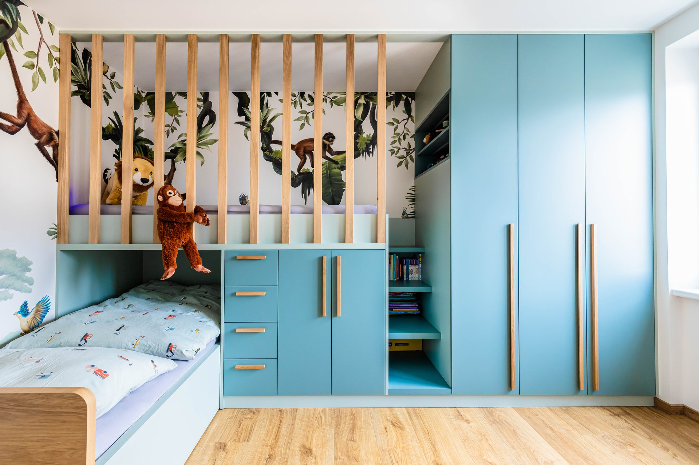
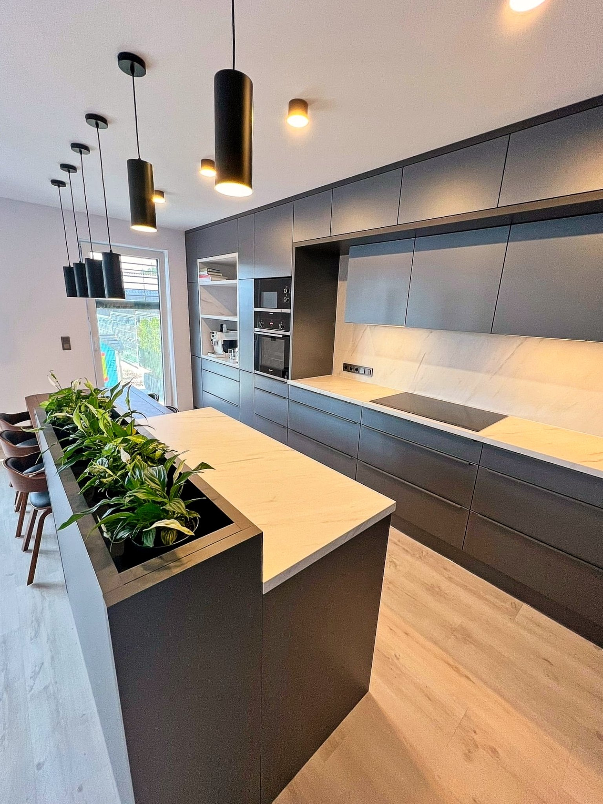
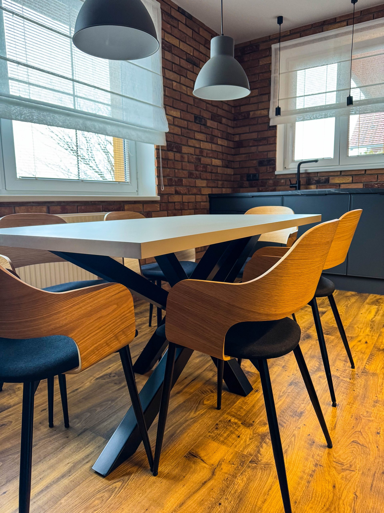

A.
Dřevěné podlahy
Přináší do místnosti příjemnou atmosféru a přirozený vzhled. Nabízíme různé druhy dřevin a povrchové úpravy, abyste si mohli vybrat ten, který nejlépe ladí s Vaším stylem.
Naše služby pokrývají kompletní interiér — od první konzultace přes výrobu nábytku v naší dílně až po položení podlahy a montáž žaluzií. Vše pod jednou střechou.

Specializujeme se na výrobu kuchyní na míru s využitím moderních technologií a výrobních nástrojů. Vaši kuchyň s vámi naplánujeme tak, aby nejen vypadala hezky, ale byla také praktická a funkční pro každodenní používání.
Při rekonstrukci pro vás zajistíme i potřebné elektroinstalační a instalatérské práce. Nabízíme výběr dřezů a baterií značek FRANKE, BLANCO a SINKS. Zajistíme i dodání kuchyňských spotřebičů.
Od první návštěvy po dokončení projektu vás provedeme jasným a přehledným procesem. Bez překvapení a skrytých nákladů.
Navštívíme prostor, probereme vaše představy a přesně zaměříme.
Vyhotovíme prvotní nákresy, 3D vizualizace a představíme materiály.
Po úpravách dle vašich požadavků vytvoříme nezávaznou cenovou nabídku.
Vyrobíme nábytek v naší dílně a profesionálně namontujeme na místě.

Zabýváme se výrobou nábytku na míru — vestavěné skříně, koupelnový nábytek, vybavení dětských pokojů a kancelářských prostor. Při výrobě používáme pouze kvalitní a ověřené materiály.
Vyrobíme pro vás funkční nábytek, a to bez ohledu na to, zda preferujete moderní a minimalistický design, rustikální atmosféru nebo elegantní klasiku.

Naše interiérové studio nabízí stínící techniku prvotřídních značek CLIMAX a VELUX, která je vyrobena z kvalitních materiálů a dodává vašemu domovu nebo pracovnímu prostoru skvělý vzhled a funkčnost.
Ať už si přejete moderní minimalistický design nebo klasický a elegantní vzhled, naše stínící technika vám umožní dosáhnout požadované atmosféry.
Podlahy jsou základním prvkem každého interiéru a mají významný vliv na celkový dojem z prostoru. Nabízíme velký výběr podlahových materiálů, které splní i ty nejnáročnější požadavky.

Nabízíme, dodáváme a montujeme interiérové dveře a zárubně od předních českých výrobců Sapeli a CAG. Při výběru klademe důraz nejen na design, ale i na funkčnost a dlouhou životnost.
Široký výběr dekorů, povrchových úprav, celoskleněných variant i skrytých zárubní. Vše dovezeme a profesionálně osadíme.

Dřevoplastové terasové prkno je inovativním řešením pro ty, kteří hledají spojení estetiky dřeva a praktičnosti plastu. Materiál vytvořený smícháním dřevěných vláken s recyklovaným plastem — odolný a ekologicky šetrný.
Parapety — Nabízíme také kvalitní vnitřní i venkovní parapety pro váš dům a byt.
Kromě hlavních činností pro vás máme i několik užitečných služeb navíc.

Navrhujeme a realizujeme interiéry pro byty, domy, kanceláře a komerční prostory. Náš tým se pyšní kreativitou a odbornými znalostmi. Využíváme nejmodernější programy pro detailní zpracování návrhů.
Některé speciální stroje potřebujete jen občas — proto si je u nás stačí zapůjčit. Čistič koberců Kärcher PUZZI 100 i profesionální brusné stroje BELT, EDGE a BUFFER.
Čistič koberců a brusné stroje pro renovaci podlah — pro chvíle, kdy se vyplatí mít po ruce profesionální nářadí.
| Stroj | Půldenní | Denní | Víkend |
|---|---|---|---|
| Válcová BELT | 610 Kč | 1 000 Kč | 1 700 Kč |
| Okrajová EDGE | 400 Kč | 450 Kč | 790 Kč |
| Talířová BUFFER | 480 Kč | 550 Kč | 1 000 Kč |
Kauce: BELT 8 000 Kč · EDGE a BUFFER 3 000 Kč. Vrácena v plné výši v den vrácení stroje ve stavu před zapůjčením.
Brusivo: Lze zapůjčit po úhradě zálohy libovolné množství. Při ploše ~20 m² se středním znečištěním je sada zálohována cca na 2 000 Kč. Nepoužité brusivo vrátíte a dorovná se podle skutečné spotřeby.
Zaměříme prostor, vytvoříme nezávazný 3D návrh a cenovou nabídku zdarma. Stačí nám napsat nebo zavolat.